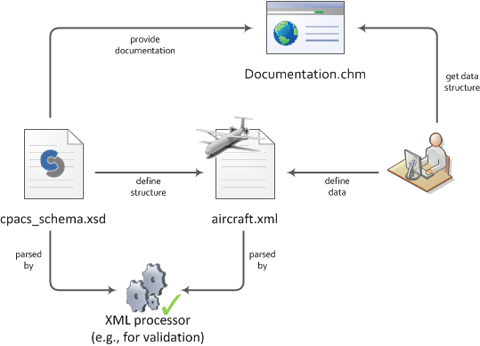

The Common Parametric Aircraft Configuration Scheme (CPACS) is an XML-based data format for describing aircraft configurations and their corresponding data.
This XML-Schema document (XSD) serves two purposes: (1) it defines the CPACS data structure used in the XML file (e.g., aircraft.xml) and (2) it provides the corresponding documentation (see picture below). An XML processor (e.g., TiXI or XML tools in Eclipse) parses the XSD and XML files and validates whether the data set defined by the user (or tool) conforms to the given structure defined by the schema.

This documentation explains the elements defined in CPACS and its corresponding data types. Data types can either be simple types (string, double, boolean, etc.) or complex types (definition of attributes and sub-elements to build a hierarchical structure). In addition, the sequence of the elements and their occurrence is documented.
To link the XML file to the XSD file, the header of the XML file should specify the path of the schema file. An example could look like this: <cpacs xmlns:xsi="http://www.w3.org/2001/XMLSchema-instance"
xsi:noNamespaceSchemaLocation="pathToSchemaFile/cpacs_schema.xsd">
CPACS is an open source project published by the German Aerospace Center (DLR e.V.). For further information please visit www.cpacs.de.